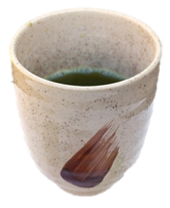
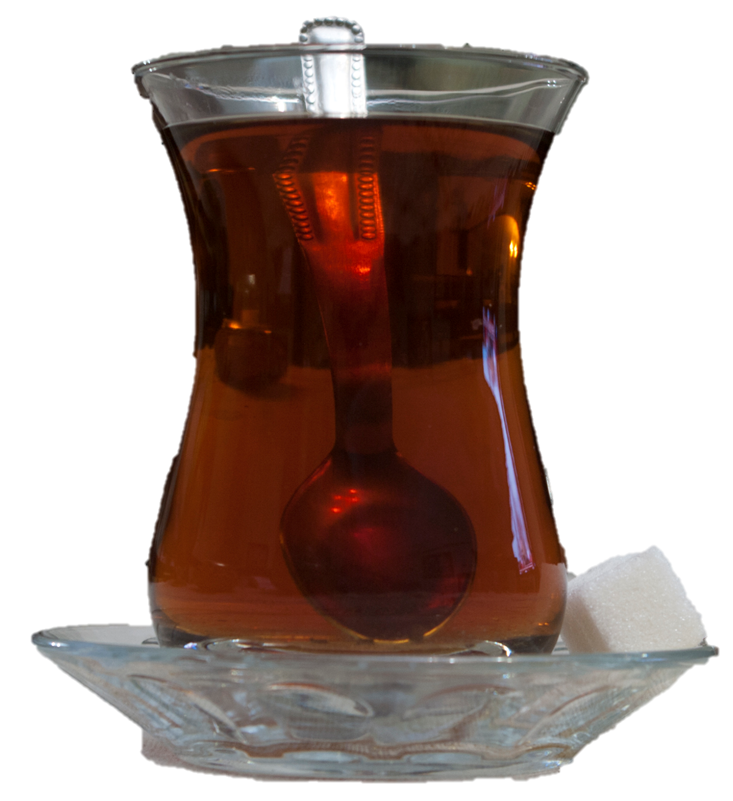
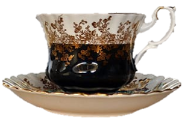

This website aims to introduce those new to drinking or preparing tea about the many different types and traditions around the globe. Tea is the most consumed beverage in the world besides water and has a long history in many countries. While there are many ceremonies and high quality sources, everyone can and should try having a cup or two in their own homes. You will be surprised by the wide range of flavors, colors, and strengths of tea. Discover the top teas in each country or try a quiz to test your tea knowledge!
Select one of the cups below to visit other pages to view more resources and fun facts

Green in Japan, red in Africa, and more
How much do you really know about tea?
Buy your own leaves or ask us questions